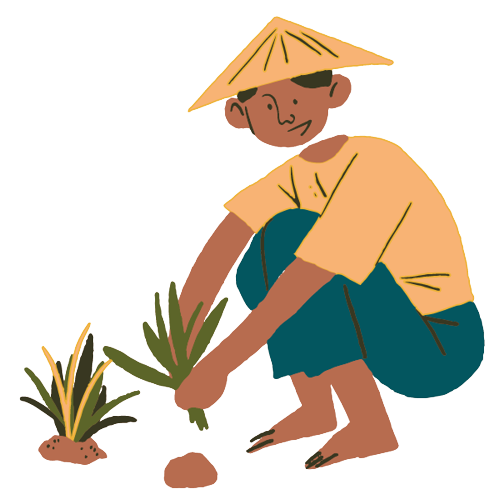

 Sustainable agriculture can be defined in many ways, but ultimately it seeks to sustain farmers, resources and communities by promoting farming practices and methods that are profitable, environmentally sound and good for communities. Sustainable agriculture fits into and complements modern agriculture. It rewards the true values of producers and their products. It draws and learns from organic farming. It works on farms and ranches large and small, harnessing new technologies and renewing the best practices of the past. (SARE Western, 2020)
Sustainable agricultural practices are intended to protect the environment,
expand the Earth’s natural resource base, and maintain and improve soil fertility.
Sustainable agriculture is important for several reasons:
🌎Sustainable agriculture promotes practices that minimize negative impacts on the environment. By using techniques such as organic farming, soil conservation, and water management, it helps protect ecosystems, preserve biodiversity, reduce soil erosion, prevent water pollution, and conserve natural resources.
🌎With a growing global population, sustainable agriculture plays a crucial role in ensuring long-term food security. By adopting sustainable practices, farmers can maintain soil fertility, enhance crop yields, and reduce the risk of soil degradation, pests, and diseases. This helps to maintain a stable and reliable food supply for present and future generations.
🌎Sustainable agriculture practices contribute to climate change mitigation and adaptation. They help to reduce greenhouse gas emissions by minimizing the use of synthetic fertilizers and pesticides, conserving energy, and adopting agroforestry practices. Sustainable agriculture also promotes resilient farming systems that can withstand the impacts of climate change, such as extreme weather events and changing precipitation patterns.
🌎Sustainable agriculture can be economically beneficial for farmers and rural communities. By reducing input costs, minimizing reliance on external inputs, and diversifying income streams, sustainable farming practices can improve profitability and long-term viability. Additionally, sustainable agriculture often prioritizes local and regional markets, fostering economic growth and community development.
🌎Sustainable agriculture prioritizes the production of safe and nutritious food. By minimizing the use of harmful chemicals and promoting organic farming practices, it reduces the exposure of farmers, workers, and consumers to potentially harmful substances. Additionally, sustainable agriculture can contribute to improved nutrition and dietary diversity, which is crucial for human health and well-being.
Smart farming and precision agriculture play a crucial part in sustainable agriculture, using big data and new technologies such as IoT, drone imagery and smartphone apps to harvest as much matter and products as possible, while consuming less energy and inputs (fertilizers, phytosanitary products, water).
-tap the radio buttons to change manually-
Photos edited by: Anthony Star B. Cultura
Your contribution [as a human being residing on Earth] is very important! Tell us what you would like to do:
As outlined by the Solar Impulse Foundation, The 3 main goals and benefits of sustainable farming are:
The first advantage of sustainable agriculture is the protection of the environment, reducing erosion and natural resource degradation, improving air and water quality, increasing biodiversity, as well as decreasing carbon emissions.
Sustainable agriculture don’t use hazardous pesticides and fertilizers. As a result, farmers are able to produce safer and healthier food for consumers and surrounding communities.
Another benefit of sustainable farming methods is that they provide decent income, but also jobs, food and other goods and services for the majority of people now living in poverty. Besides, it allows to boost rural territories and create social links between the rural and urban world.